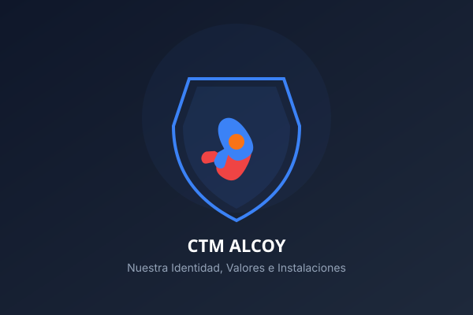

Patrocinio Deportivo
Asocia tu marca a los valores del CTM Alcoy y obtén una gran visibilidad local y autonómica.
Crecemos Juntos
Ventajas de Patrocinar al CTM Alcoy
Nuestro club es un referente deportivo con una amplia base social y participación en ligas federadas de alto nivel. Ofrecemos a las empresas colaboradoras una excelente plataforma de visibilidad y compromiso social en Alcoy y la Comunidad Valenciana:
- Equipos Federados: Presencia activa en 2ª Nacional de España, 1ª Autonómica y 2ª Autonómica de la Comunidad Valenciana.
- Formatos de Publicidad: Logotipos en camisetas de juego, vallas publicitarias en el polideportivo municipal, pancartas en torneos y presencia destacada en nuestras redes sociales y sitio web.
- Impacto Local y Social: Apoya a la escuela infantil base y promueve el estilo de vida activo y saludable del tenis de mesa.

Colaboradores Oficiales
Patrocinadores Actuales
Regidoria d'Esports
Con el soporte institucional de la Regidoria d'Esports del Ajuntament d'Alcoi.
Unión Alcoyana Seguros
Colaborador histórico comprometido con el impulso de la cantera y el deporte en Alcoy.